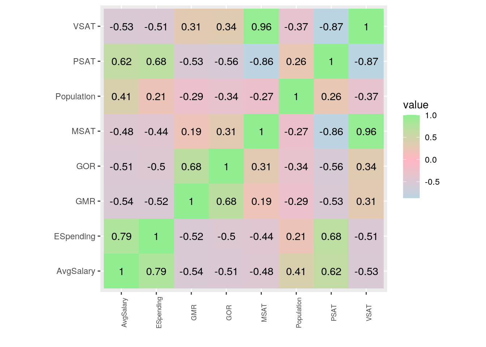
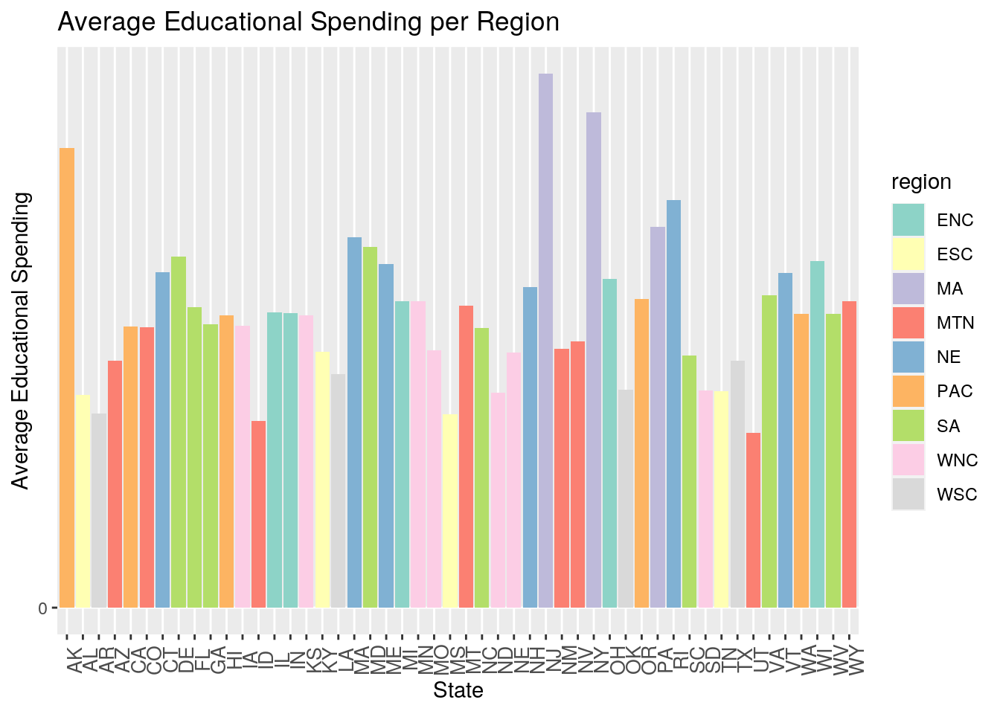
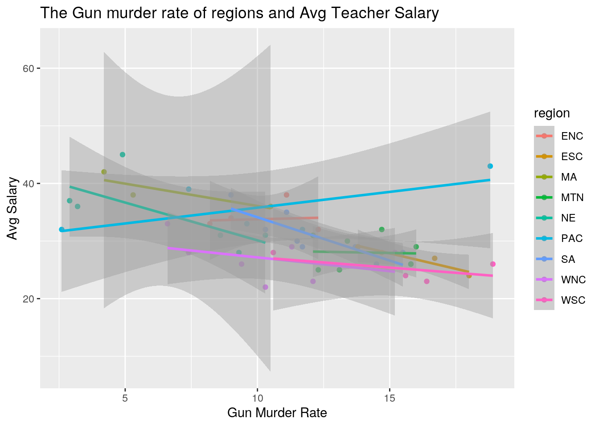
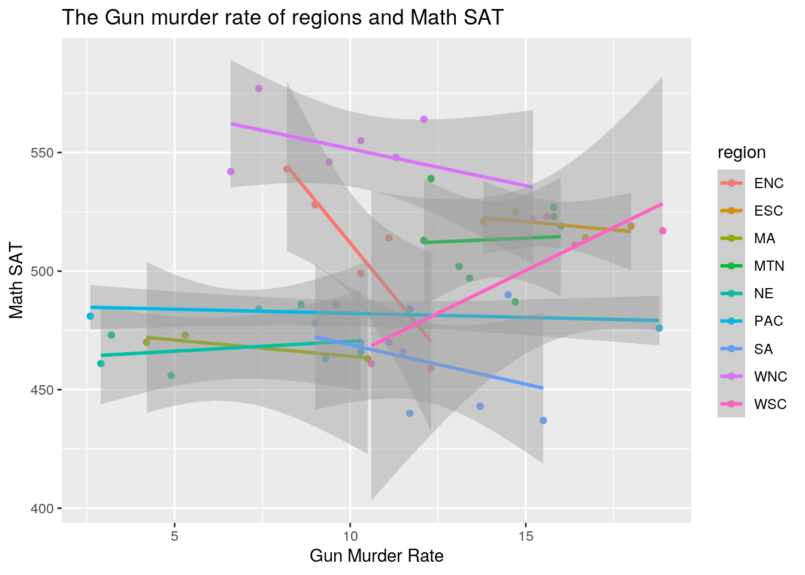
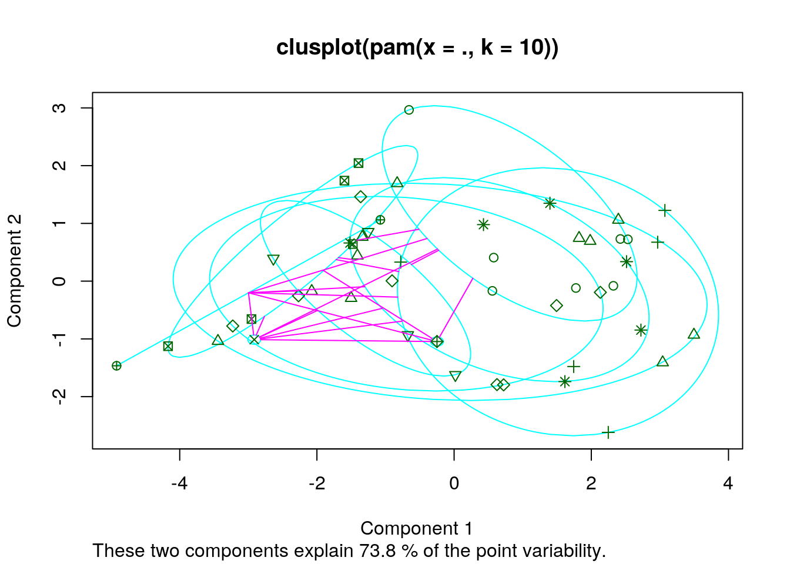
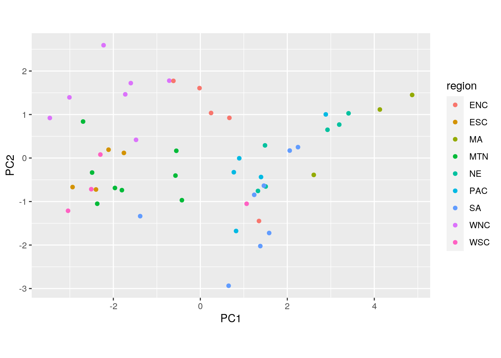

The first data-set I chose was about the gun murder rate and gun ownership rate per the population in different states. This dataset explains how many homocides occur due to gun violence and compares it to the proportion of gun ownership in that state to understand if regal gun ownership has a correlation with the violence. The second data-set about the states in terms of state region, population number, Verbal SAT score, Math SAT score and percent of SAT takers and the amount of money the education system receives and the average pay of high school teachers. This data-set displays the relationships between the money in education and its faculty and resulting score/success of their students.
I chose these data-sets because I wanted to understand if there was a relationship between gun violence and education pay and average student success of a state. This data-set entailed all those components and the topic of gun reform is such a hot debate that it seemed like an interesting project to work on.
library(tidyverse)
Gun <- read_csv("~/gun_violence_us.csv")
States <- read_csv("~/Book3.csv")For the data-sets, I used left-join to join the data-sets. I decided on left join because I wanted to keep all my data-sets for “Gun” and remove the excess data points in “States” that is not in Gun. With this merge, I lost “CN” and “DC” because neither of the two were in the Gun data-set but were in States and this merge kept me from having uncollected data.
## [1] "CN" "DC"The mean, standard deviation, maximum value, minimum value and distinct values for every numeric variable for GOR, GMR, ESpending, AvgSalary, PSAT, VSAT, LSAT, MSAt and population all over America was calculated using summarize_all(). After deselecting state and region, the mean, standard deviation, minimum, median and maximum values of all variables were calculated. Then, the dataset was tidied by separating every numeric category from their respective calculations and then pivoted widely to display it all in a easily legible manner. Then, using the mutate function, variance was created via squaring the Sd value. Lastly, they were arranged in descending order by mean variance. This data-set gives a good picture of the Gun rates and the education data for all of America.
Next, grouping the data by region and deselecting state, the same mean, standard deviation, minimum, median and maximum values of all variables were calculated via summarize_all. After tidying the data and arranging via descending GMR_Mean. From this dataset, each region’s stats can be displayed and based on the ascending order, it can be seen that region ESC has the highest GMR average. Lastly, using the results from the previous set, I grouped the data by state and region and filtered out for ESC region and found the same mean, standard deviation, minimum, median and maximum values of all variables and arranged by ascending GMR_max and found that MS has the highest GMR value at 18. I did the same thing to see the trend with average salary and AR seemed to have had the lowest avgerage salary.
Fdata %>% select(-"state", -"region") %>% summarise_all(list(Min = min,
Mean = mean, Max = max, Sd = sd, Median = median)) %>% pivot_longer(contains("_")) %>%
separate(name, into = c("Category", "Statistics")) %>% pivot_wider(names_from = "Statistics",
values_from = "value") %>% mutate(Variance = Sd^2) %>% arrange(Variance)## # A tibble: 8 x 7
## Category Min Mean Max Sd Median Variance
## <chr> <dbl> <dbl> <dbl> <dbl> <dbl> <dbl>
## 1 GOR 0.052 0.331 0.617 0.135 0.322 0.0183
## 2 ESpending 2.99 5.07 9.16 1.26 5.03 1.59
## 3 GMR 2.6 11.4 18.9 4.09 11.4 16.7
## 4 AvgSalary 22 30.8 45 5.34 30 28.5
## 5 PSAT 4 32.7 72 23.3 24.5 542.
## 6 VSAT 397 449. 511 30.6 444 938.
## 7 MSAT 437 498. 577 34.3 494. 1175.
## 8 Population 454 4998. 29760 5454. 3576 29750975.Fdata %>% group_by(region) %>% select(-"state") %>% summarise_all(list(Min = min,
Mean = mean, Max = max, Sd = sd, Median = median)) %>% pivot_longer(contains("_")) %>%
pivot_wider(names_from = "name", values_from = "value") %>%
arrange(-GMR_Mean)## # A tibble: 9 x 41
## region GMR_Min GOR_Min Population_Min VSAT_Min MSAT_Min PSAT_Min ESpending_Min
## <chr> <dbl> <dbl> <dbl> <dbl> <dbl> <dbl> <dbl>
## 1 ESC 13.8 0.394 2573 470 514 4 3.32
## 2 WSC 10.6 0.312 2351 413 461 6 3.33
## 3 MTN 12.1 0.319 454 434 487 5 2.99
## 4 SA 9 0.052 666 397 437 15 4.33
## 5 WNC 6.6 0.198 639 473 522 5 3.68
## 6 ENC 8.2 0.196 4892 408 459 11 5.05
## 7 PAC 2.6 0.201 550 404 476 42 4.83
## 8 MA 4.2 0.103 7730 412 463 64 6.53
## 9 NE 2.9 0.058 563 422 456 54 5.50
## # … with 33 more variables: AvgSalary_Min <dbl>, GMR_Mean <dbl>,
## # GOR_Mean <dbl>, Population_Mean <dbl>, VSAT_Mean <dbl>, MSAT_Mean <dbl>,
## # PSAT_Mean <dbl>, ESpending_Mean <dbl>, AvgSalary_Mean <dbl>, GMR_Max <dbl>,
## # GOR_Max <dbl>, Population_Max <dbl>, VSAT_Max <dbl>, MSAT_Max <dbl>,
## # PSAT_Max <dbl>, ESpending_Max <dbl>, AvgSalary_Max <dbl>, GMR_Sd <dbl>,
## # GOR_Sd <dbl>, Population_Sd <dbl>, VSAT_Sd <dbl>, MSAT_Sd <dbl>,
## # PSAT_Sd <dbl>, ESpending_Sd <dbl>, AvgSalary_Sd <dbl>, GMR_Median <dbl>,
## # GOR_Median <dbl>, Population_Median <dbl>, VSAT_Median <dbl>,
## # MSAT_Median <dbl>, PSAT_Median <dbl>, ESpending_Median <dbl>,
## # AvgSalary_Median <dbl>Fdata %>% group_by(region) %>% group_by(state) %>% filter(region ==
"ESC") %>% summarise_all(list(Max = max, Mean = mean, Min = min,
Sd = sd, Median = median)) %>% arrange(-GMR_Max) %>% select(1:10)## # A tibble: 4 x 10
## state GMR_Max GOR_Max region_Max Population_Max VSAT_Max MSAT_Max PSAT_Max
## <chr> <dbl> <dbl> <chr> <dbl> <dbl> <dbl> <dbl>
## 1 MS 18 0.428 ESC 2573 477 519 4
## 2 AL 16.7 0.489 ESC 4041 470 514 8
## 3 TN 14.7 0.394 ESC 4877 483 525 12
## 4 KY 13.8 0.424 ESC 3685 473 521 10
## # … with 2 more variables: ESpending_Max <dbl>, AvgSalary_Max <dbl>Fdata %>% group_by(region) %>% select(-"state") %>% summarise_all(list(Min = min,
Mean = mean, Max = max, Sd = sd, Median = median)) %>% pivot_longer(contains("_")) %>%
pivot_wider(names_from = "name", values_from = "value") %>%
arrange(AvgSalary_Mean)## # A tibble: 9 x 41
## region GMR_Min GOR_Min Population_Min VSAT_Min MSAT_Min PSAT_Min ESpending_Min
## <chr> <dbl> <dbl> <dbl> <dbl> <dbl> <dbl> <dbl>
## 1 WSC 10.6 0.312 2351 413 461 6 3.33
## 2 ESC 13.8 0.394 2573 470 514 4 3.32
## 3 WNC 6.6 0.198 639 473 522 5 3.68
## 4 MTN 12.1 0.319 454 434 487 5 2.99
## 5 SA 9 0.052 666 397 437 15 4.33
## 6 ENC 8.2 0.196 4892 408 459 11 5.05
## 7 NE 2.9 0.058 563 422 456 54 5.50
## 8 PAC 2.6 0.201 550 404 476 42 4.83
## 9 MA 4.2 0.103 7730 412 463 64 6.53
## # … with 33 more variables: AvgSalary_Min <dbl>, GMR_Mean <dbl>,
## # GOR_Mean <dbl>, Population_Mean <dbl>, VSAT_Mean <dbl>, MSAT_Mean <dbl>,
## # PSAT_Mean <dbl>, ESpending_Mean <dbl>, AvgSalary_Mean <dbl>, GMR_Max <dbl>,
## # GOR_Max <dbl>, Population_Max <dbl>, VSAT_Max <dbl>, MSAT_Max <dbl>,
## # PSAT_Max <dbl>, ESpending_Max <dbl>, AvgSalary_Max <dbl>, GMR_Sd <dbl>,
## # GOR_Sd <dbl>, Population_Sd <dbl>, VSAT_Sd <dbl>, MSAT_Sd <dbl>,
## # PSAT_Sd <dbl>, ESpending_Sd <dbl>, AvgSalary_Sd <dbl>, GMR_Median <dbl>,
## # GOR_Median <dbl>, Population_Median <dbl>, VSAT_Median <dbl>,
## # MSAT_Median <dbl>, PSAT_Median <dbl>, ESpending_Median <dbl>,
## # AvgSalary_Median <dbl>Fdata %>% group_by(region) %>% group_by(state) %>% filter(region ==
"WSC") %>% summarise_all(list(Max = max, Mean = mean, Min = min,
Sd = sd, Median = median)) %>% arrange(AvgSalary_Min) %>%
select(1:10)## # A tibble: 4 x 10
## state GMR_Max GOR_Max region_Max Population_Max VSAT_Max MSAT_Max PSAT_Max
## <chr> <dbl> <dbl> <chr> <dbl> <dbl> <dbl> <dbl>
## 1 AR 16.4 0.579 WSC 2351 470 511 6
## 2 OK 15.6 0.312 WSC 3146 478 523 9
## 3 LA 18.9 0.445 WSC 4220 476 517 9
## 4 TX 10.6 0.357 WSC 16987 413 461 42
## # … with 2 more variables: ESpending_Max <dbl>, AvgSalary_Max <dbl>Three separate plots were created. Plot 1 was the heat plot that demonstrated areas of high clustering between the variables. In this case, the most interesting clusterings was the heavy clustering between VSAT and MSAT. Mostly everything else ranged around the -0.4 to -0.5 region. The next plot showed the average spending and state grouped off my region. In this plot, more of the highest averaging salaries were seen in region MA with the highest being in NJ. The lowest is trending around region WSC or MTN with the lowest being in UT. Lastly, a plot of relationship of gun murder rate and average salary grouped off by region was created. This plot demonstrated a rather variable positive and negative relationship throughout various regions. This was rather interesting because I was expecting to see an undeniable downward trend of average salary with an upward trend of Gun Murder Rate. The same plot for gun murder rate and Math Sat scores showed the same variable positive and negative trend but for the most part it seemed relatively stagnant across gun violence.
Fdata %>% select_if(is.numeric) %>% cor(use = "complete.obs") %>%
as.data.frame %>% rownames_to_column %>% pivot_longer(-1) %>%
ggplot(aes(rowname, name, fill = value)) + geom_tile() +
geom_text(aes(label = round(value, 2))) + xlab("") + ylab("") +
coord_fixed() + scale_fill_gradient2(low = "light blue",
mid = "light pink", high = "light green") + theme(axis.text.x = element_text(size = 7,
angle = 90))
ggplot(Fdata, aes(x = state, y = ESpending, fill = region)) +
geom_bar(position = "dodge", stat = "summary", fun = "mean") +
scale_y_continuous("Average Educational Spending", breaks = seq(0,
150, 55)) + xlab("State") + theme(axis.text.x = element_text(size = 10,
angle = 90)) + ggtitle("Average Educational Spending per Region") +
geom_errorbar(stat = "summary", fun.data = mean_se, width = 1) +
scale_fill_brewer(palette = "Set3")
ggplot(data = Fdata, aes(x = GMR, y = AvgSalary)) + geom_point(aes(color = region)) +
ggtitle("The Gun murder rate of regions and Avg Teacher Salary") +
ylab("Avg Salary") + xlab("Gun Murder Rate") + geom_smooth(method = "lm",
aes(color = region)) + scale_fill_brewer(palette = "Set3")
ggplot(data = Fdata, aes(x = GMR, y = MSAT)) + geom_point(aes(color = region)) +
ggtitle("The Gun murder rate of regions and Math SAT") +
ylab("Math SAT") + xlab("Gun Murder Rate") + geom_smooth(method = "lm",
aes(color = region)) + scale_fill_brewer(palette = "Set3")
PCA1 and PCA2 do not seem to be separate from one another based on region according to the plot of PC scores. It seems as though almost all of the regions are relatively intertwined with one another. Even with the clustering plot there was a 73.8% variability explanation. Outside of the population clusering of every category, all the distributions seemed to be fairly evenly spread across the board.
library(cluster)
library(GGally)
pam1 <- Fdata %>% select(-state, -region) %>% pam(k = 10)
head(pam1)## $medoids
## GMR GOR Population VSAT MSAT PSAT ESpending AvgSalary
## [1,] 13.4 0.323 3665 445 497 25 4.231 30
## [2,] 15.8 0.523 799 464 523 20 5.184 26
## [3,] 18.0 0.428 2573 477 519 4 3.322 24
## [4,] 7.4 0.201 29760 419 484 45 4.826 39
## [5,] 14.7 0.394 4877 483 525 12 3.707 28
## [6,] 10.5 0.271 11882 420 463 64 6.534 36
## [7,] 13.7 0.316 6478 401 443 57 4.860 29
## [8,] 15.8 0.499 1515 480 527 12 4.446 26
## [9,] 11.1 0.288 9295 454 514 12 5.257 38
## [10,] 10.6 0.357 16987 413 461 42 4.238 28
##
## $id.med
## [1] 3 26 24 5 42 38 10 31 22 43
##
## $clustering
## [1] 1 2 1 3 4 1 5 2 6 7 2 2 6 5 3 3 1 1 8 5 7 9 5 3 5
## [26] 2 8 8 2 7 8 10 7 2 6 1 3 6 2 1 2 5 10 8 2 7 5 8 5 2
##
## $objective
## build swap
## 329.3861 280.3647
##
## $isolation
## 1 2 3 4 5 6 7 8 9 10
## no no no no no no no no no L*
## Levels: no L L*
##
## $clusinfo
## size max_diss av_diss diameter separation
## [1,] 7 556.4965 295.3211 1074.0256 157.7271
## [2,] 11 345.1594 214.2524 658.6240 102.9667
## [3,] 5 277.7816 163.2292 494.6989 311.6723
## [4,] 1 0.0000 0.0000 0.0000 11770.0383
## [5,] 8 675.7644 234.9042 1174.6678 157.7271
## [6,] 4 1056.2139 638.4068 2091.6223 1552.1217
## [7,] 5 1252.6001 432.2093 1714.0310 473.0386
## [8,] 6 319.1649 196.7668 591.1754 102.9667
## [9,] 1 0.0000 0.0000 0.0000 1552.1217
## [10,] 2 1003.5588 501.7794 1003.5588 4049.0074plot(pam1, which = 1)
eig <- Fdata %>% select(-region, -state) %>% cor(use = "complete.obs") %>%
eigen()
PCA <- Fdata %>% select(-region, -state) %>% scale() %*% eig$vectors
Fdata %>% mutate(PC1 = PCA[, 1], PC2 = PCA[, 2]) %>% ggplot(aes(PC1,
PC2, color = region)) + geom_point() + coord_fixed()
Note that the echo = FALSE parameter was added to the code chunk to prevent printing of the R code that generated the plot.